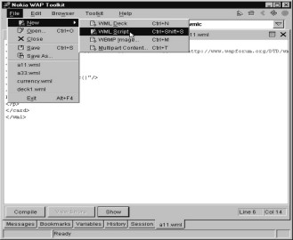
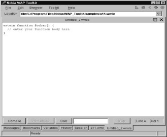
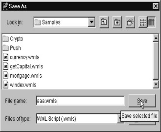
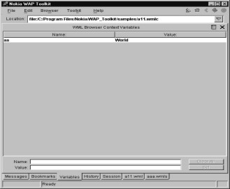
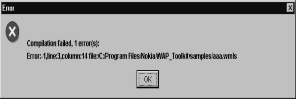
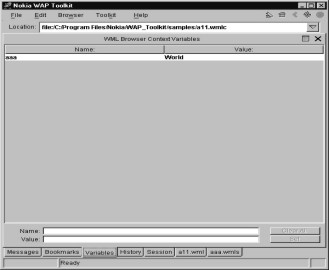
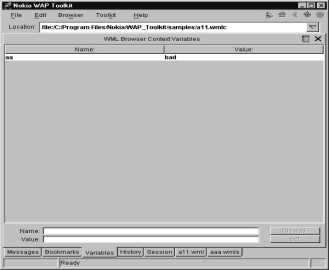

1
Introduction
With the avalanche of a variety
of hand-held devices and the brimming popularity and affordability of mobile
telephones, palm-tops, Personal Digital Assistants (PDAs) etc., wireless
communication is a concept whose time has come. In order to implement software
that runs on these wireless devices, there exists a scripting language known as
Wireless Markup Language Script (WMLScript), which has evolved from the
Wireless Markup Language (WML).
In order to comprehend the
need for the creation of a language like WMLScript, the drawbacks of its
precursor viz. WML have to be understood. In the first Chapter, we shall
provide a general overview of the WMLScript language, especially in the context
of how it has overcome the drawbacks of WML; and introduce you to some of the
basic concepts of the language.
Wireless Markup Language
(WML) is infested with a myriad problems. They are as follows :
(a) It is static in nature.
(b) Even though it has the
concept of variables, initialising these variables is not as simple as it is in
any other programming languages.
(c) It doesn't support the
features that other programming languages do.
As a consequence, you
cannot write code that is dynamic. Dynamic in this context means, the ability
to modify the behaviour of the program while it is running. Therefore, in this
sense, WML is similar to HTML. In both cases, you cannot write programs which
have sufficient in-built intelligence. WML also fails to offer you the
requisite level of flexibility.
Netscape was able to identify
this lacuna a long time ago. They also found that products like Dbase was very
effective for the job they were meant to do, i.e. handling databases. But, they
had their limitations in terms of the level of complexity and magnitude that
they could handle. You obviously cannot use the Dbase family of products to
send a man on the moon. Once upon a time, when one wanted to write a business
application, there was no product more effective and swifter than Dbase. Today,
there are a plethora of other software products. In order to overcome the lack
of intelligence of HTML, Netscape decided to invent a product that could be
embedded in HTML, which they christened as LiveScript. LiveScript is a
programming language, which was invented to add intelligence to the browser and
provide it with a full-fledged programming environment.
With Livescript, Netscape
wanted to provide a facility whereby, HTML code could be interspersed with
Script code. Unfortunately, this product was much ahead of its times. In those days,
LiveScript was still in its infancy and was unheard of in programming circles.
Netscape, on realising that Java was the current flavour of the town, renamed this product as JavaScript. Later on, however, Java became the
International Standard.
The WAP professionals also
wanted to develop a software that was of International Standards. So they amalgamated a major part of
ECMAScript and JavaScript and named it as WMLScript. The difference between
WMLScript and JavaScript is that you cannot embed WMLScript in WML, whereas
JavaScript can be embedded in HTML. In the case of WMLScript and WML, you have
to call them separately. So, in the case of
WMLScript, within WML, you can use href and instead of going to a
certain card, or going to another site on the net, you can call a WMLScript
function.
In our very first program,
we have performed a very simple task. We have a do, /do and in that we have a
go href. We have named the WMLScript file as aaa.wmls. The suffix
"wml" signifies that it is a WML file, and the 's' added to it
signifies that it is a WMLScript file.
|
Screen 1. 1 |
a11.wml
<?xml version="1.0"?>
<!DOCTYPE wml PUBLIC "-//WAPFORUM//DTD WML 1.1//EN" "http://www.wapforum.org/DTD/wml_1.1.xml">
<wml>
<card>
<do type="aa">
<go href="aaa.wmls#abc()"/>
</do>
<p>
Hello World!!!
</p>
</card>
</wml>
Just as a deck is a
collection of cards, a WMLS file is a collection of functions. If you want to
execute a certain function in the WMLS file, you have to put a #. Further,
instead of the name of a card, you are required to mention the name of a
function with round brackets i.e. ( ) .
When you compile this WML
file and run it, nothing will happen ! If you then click on options and click
again with i selected, you will get a message saying that there is no file
called aaa.wmls. This is as depicted
below in fig 1.1.
You will have to click on
File - New to indicate that you want to create a WML Script file. It creates a
small program. Here the program contains an extern function and foobar with (
).
|
 |
 |
|
Screen 1. 2 |
Screen 1. 3 |
Whenever you see the word
foobar, (as the Americans like to call it), it is an indication that you have to
enter your own function name. The word extern suggests that the function can be
called from outside this file, i.e. from a WML file. If you don't use the word extern, then it doesn't accept it as a
function.
On the next line, you can
see a pair of curly braces - { and }. These indicate the start point and end
point of the code. These are used instead of a begin or end, a similar syntax
used in other languages. There is no need to reiterate time and again that
WMLScript and JavaScript look and feel just like the C programmimg
language.
In order to ignore any text
in a WMLScript file, you should begin the line with two slashes i.e. //. This
indicates that the following text is a comment. It is ignored by the compiler.
That is why, the line containing the text "enter your function body
here" which starts with two slashes, gets ignored. We initially decided not to disclose to you
as to why two slashes are used for marking comments, but we subsequently changed
our minds. Two slashes are used because the C programming language follows this
convention.
Earlier, C used /* */ for
comments. You could use this combination for marking comments and within it,
you could have 6 lines of comments. When the newer versions of C and C++ were
released, the syntax was amended to consist of only two slashes because, it was
decided to put comments on a single line.
When you remove the
comments and change the name foobar to abc, the program that you will obtain is
as follows :
|
Screen 1. 4 |
aaa.wmls
extern function abc()
{
// enter your function body here
}
|
 |
|
Screen 1. 5 |
After this function is
written, nothing will happen since the code was not compiled. So always
remember to compile the code. In order to do so, you will have to click on a
button called Compile. On doing so, the name aaa.wmls gets transformed into
aaa.wmlsc. The suffix 'c' at the end of the name indicates that the file has
been compiled.
|
Screen 1. 6 |
When you execute the WML
file, you will realize that nothing happens. Nothing happens because there is
no code in the WMLS file. The program doesn't give any error either. You may
wonder as to why we are doing what we are doing. We are doing so because we want flexibility. We want to display
the string "Hello World". One way to do this would be to put it in
the WML file as we have seen in the earlier example. In this case, "Hello
World" will be displayed. Here we are hard-coding it or committing
ourselves to the contents of the string.
In order to have some flexibility, we can use variables.
In the next example we use variables
to lend flexibility to the code. The text and the variables are placed within
<p> </p>.
a11.wml
<?xml version="1.0"?>
<!DOCTYPE wml PUBLIC "-//WAPFORUM//DTD WML 1.1//EN" "http://www.wapforum.org/DTD/wml_1.1.xml">
<wml>
<card id="c1" newcontext="true">
<do type="aa">
<go href="aaa.wmls#abc()"/>
</do>
<p>
Hello $aa
</p>
</card>
</wml>
When you run the WML file,
it will show a blank screen because $aa is unset. Before we go further, write
this code in the function abc in the aaa.wmls file.
aaa.wmls
extern function abc()
{
WMLBrowser.setVar("aa","World")
}
At this stage, if you click
on compile, you will get an error message.
|
Screen 1. 7 |
This is because every time
you write a line of code, you must end it with a semi colon i.e. ;. A semicolon marks the end of a
statement. Creators of the WMLScript decided to use a semicolon. Incidentally,
JavaScript also uses semicolons. JavaScript does so because C uses semicolons
at the end of every statement. So, we
now put a semicolon and then compile it.
Go back to the WML file to run the script.
|
Screen 1. 8 |
Screen 1. 9 |
Screen 1. 10 |
You will see Hello World
displayed on your screen as aa now contains World.
Click on the Variable tag at
the bottom. It will show a variable called 'aa', which has the value
"World".
|
 |
|
Screen 1. 11 |
By executing the WMLScript function,
you have actually changed the value of aa to 'World'. You have done this
dynamically using go href, but this function called abc could have been called
by saying onenterforward also. Whenever
you have to perform a task, you can use a go and using go you can call the
function.
Onenterforward gets called
on startup and there you can initialize the variable in a function and use the
values. Let's now understand the script.
WMLScript gives you many
things for free. We call them Libraries, or Objects. The WMLBrowser is a
Library and a Library has functions. In our script, abc is a function.
Similarly, WMLBrowser has a function called setVar. By convention, the library
name and the function name are separated by a dot. That is why we use the syntax
WMLBrowser.setVar. In the setVar function, you have to give the name of the
variable. In our case, the variable name is 'aa' and the value that it contains
is "World". This is how the value of 'aa' is set to "World". There is one more
function called refresh in the WMLBrowser Library. This is shown in the next
script. In the previous version, the Browser showed no output unless it was
refreshed.
|
|
|
Screen 1. 12 |

aaa.wmls
extern function abc()
{
WMLBrowser.setVar("aa","World");
WMLBrowser.refresh();
}
This piece of code shows
that WMLBrowser has two functions, setVar and refresh. When you call the function
refresh, it initialises the variable and refreshes the screen as well. It
refreshes the value of the variable. The statement $aa will now display the
value "World".
Whitespace, consisting of
space, tab, carriage return (enter) does not make any difference in the code.
You can put all the code on one line if you so desire. The semicolons matter
since they indicate the end of a statement. You should use spaces and carriage
returns to format the code in a systematic manner and not because the syntax of
WMLScript demands it.
aaa.wmls
extern function abc() { WMLBrowser.setVar("aa","World"); WMLBrowser.refresh();}
The important point is that
since you are setting the values of variables dynamically in WMLScript, they
will change in the WML file. Hence we now go to the card and say
newcontext=true so that we start afresh each time.
In any programming
language, the first thing that one looks for is what goodies is one getting for
free. Here we get WMLBrowser for free. WMLBrowser has a function called setVar.
It doesn't have a function called setVars so you get a compilation error.
aaa.wmls
extern function abc()
{
WMLBrowser.setVars("aa","World");
WMLBrowser.refresh();
}
|
 |
|
Screen 1. 13 |
The name is WMLBrowser and
not WMLBrowsers. This also generates an error message. This only implies that
you can't just choose your own names out of a hat. You have to be very careful
about the spellings.
aaa.wmls
extern function abc()
{
WMLBrowsers.setVar("aa","World");
WMLBrowser.refresh();
}
You will notice the change
in color as the word is not recognised.
|
|
|
Screen 1. 14 |

Another significant thing
to be noted is that WMLBrowser, which is predefined, is case sensitive. Since WMLScript
is a case-sensitive language, the B of Browser should be capital and the V of
setVar should be capital.
aaa.wmls
extern function abc()
{
WMLBrowser.setvar("aa","World");
WMLBrowser.refresh();
}
The color changes to black
for setvar as it is not understood.
|
Screen 1. 15 |
aaa.wmls
extern function abc()
{
WMLbrowser.setVar("aa","World");
WMLBrowser.refresh();
}
This displays the same
error as before.
It is important to note
that whatever is within double inverted commas is NOT case sensitive. It can
have any case. All the remaining syntax is case-sensitive.
The next issue is that of the
name of the variable. Here, instead of "aa" we have used
"aaa". When you go back, the variable "aa" in the WML file
will be unset. But when you click on the variables tab in Nokia, it will tell
you that the variable "aaa" has been created. This has a value of
"World". This does not generate an error. What this signifies is that
when you have a setVar and if the variable is not defined in WML, a new
variable gets created.
aaa.wmls
extern function abc()
{
WMLBrowser.setVar("aaa","World");
WMLBrowser.refresh();
}
|
 |
||
|
|
Screen 1. 17 |
So the first major use of
WMLScript is that you can use variables extensively and you can parameterise
it. As we have learnt in the WML section, variables can be placed in context, attributes, or you put them in a
go, or take the input from a user which will be sent back to the server. So,
these variables will be initialized in WML file, processed in WMLScript and
they will show up in the WML file.
You will realise that
variables are most important in WMLScript. To create a variable, you just have
to use the keyword var and then give the name of the variable. In the next
script we have used a variable called yy.
aaa.wmls
extern function abc()
{
var yy ;
WMLBrowser.setVar("aa","bad");
WMLBrowser.refresh();
}
A variable is of no use if
you can't assign a value to it. So we assign the value of 400 to yy using
yy=400. There is still a problem. You have not used the variable yy anywhere.
aaa.wmls
extern function abc()
{
var yy ;
yy = 400;
WMLBrowser.setVar("aa","bad");
WMLBrowser.refresh();
}
|
 |
||
|
|
Screen 1. 19 |
The setVar in this example
simply sets the value of the variable aa to "bad". yy is not
displayed in the Variable section.
Wherever we can use string
numbers, we can also use variables. So instead of initialising the value of aa
to "bad", we can use the variable yy. When you run the program, you
will see that $aa gets initialized to the value 400.
|
Screen 1. 20 |
aaa.wmls
extern function abc()
{
var yy ;
yy = 400;
WMLBrowser.setVar("aa",yy);
WMLBrowser.refresh();
}
You cannot use a variable if
you haven't created it or declared it. This is a very basic rule. There was
absolutely no necessity of having this rule, but since it exists, we have
complied with it and used "var
yy". If this line is deleted, it will generate an error.
aaa.wmls
extern function abc()
{
yy = 400;
WMLBrowser.setVar("aa",yy);
WMLBrowser.refresh();
}
|
Screen 1. 21 |
Now we have used yy=400. The
first thing that we would like to try out is some arithmetic. So we have used
yy = yy+10.
|
Screen 1. 22 |
aaa.wmls
extern function abc()
{
var yy;
yy = 400;
yy = yy + 10;
WMLBrowser.setVar("aa",yy);
WMLBrowser.refresh();
}
Whenever you have an equal
to sign, always look to the right. The
value of the variable yy is 400. So 400 + 10 results in the value of yy being
enhanced to 410. Similarly, you can also use the other arithmetic operators to
subtract (-), multiply(*) or divide(/).
yy = 400;
yy = yy - 10;
WMLBrowser.setVar("aa",yy);
Hello 390
yy = 400;
yy = yy * 10;
WMLBrowser.setVar("aa",yy);
Hello 4000
yy = 400;
yy = yy / 10;
WMLBrowser.setVar("aa",yy);
Hello 40
These are called arithmetic
expressions and you can combine them and make them as complicated as you like.
In the next example, we
have set the value of yy to 400. Thereafter setVar sets aa to yy i.e. to the
value of 400. Then we make yy equal to 500. The setVar takes the value of the
variable at the time of execution. It does not do so with retrospective effect.
So, since at that time, the value is of yy was 400, the value of aa also
becomes 400. Subsequently, changing the value of yy to 500 has no effect.
aaa.wmls
extern function abc()
{
var yy;
yy = 400;
WMLBrowser.setVar("aa",yy);
yy = 500;
WMLBrowser.refresh();
}
This example clearly
explains the necessity of using only one setVar. This is so because only the
last setVar will take effect.
|
Screen 1. 23 |
aaa.wmls
extern function abc()
{
var yy;
yy = 400;
WMLBrowser.setVar("aa",yy);
yy = 500;
WMLBrowser.setVar("aa",yy);
WMLBrowser.refresh();
}
Here the value of 500 that
is assigned to yy will take effect and the refresh will be done at the end of
the program.
We have already explained
to you as to how you can create your own variables. Wherever you can use a
number and a string, you can also use a variable instead. At this stage, you
would want to know the reason for having an open and close bracket in WMLS.
That's where we can give parameters. In WMLScript, all the text can be enclosed
either in double or single quotes. You are at liberty to choose which one you
want. Here, we are using a parameter called nono. Similar to the way in which
setVar took two parameters, this nono is in double quotes. Since we have
already used double quotes, it will give you an error message.
a11.wml
<?xml version="1.0"?>
<!DOCTYPE wml PUBLIC "-//WAPFORUM//DTD WML 1.1//EN" "http://www.wapforum.org/DTD/wml_1.1.xml">
<wml>
<card newcontext="true">
<do type="aa">
<go href="aaa.wmls#abc("nono")"/>
</do>
<p>
Hello $aa
</p>
</card>
</wml>
You therefore have no
choice but to use single quotes instead.
a11.wml
<?xml version="1.0"?>
<!DOCTYPE wml PUBLIC "-//WAPFORUM//DTD WML 1.1//EN" "http://www.wapforum.org/DTD/wml_1.1.xml">
<wml>
<card newcontext="true">
<do type="aa">
<go href="aaa.wmls#abc('nono')"/>
</do>
<p>
Hello $aa
</p>
</card>
</wml>
You will realize that in
abc, we haven't changed anything but we don't get any error message either. So
abc should now accept one parameter. We have named this variable as zz. Now zz
is assigned the value of nono. When we say setVar zz, the value of aa becomes
nono. The output that will be displayed is Hello nono. Thus, we have been able to pass parameters
to a function.
|
Screen 1. 24 |
aaa.wmls
extern function abc(zz)
{
WMLBrowser.setVar("aa",zz);
WMLBrowser.refresh();
}
It is worthwhile to note
that WML is not too fussy about whether the parameter is a number or a string.
So you can use either nono or 100. Both are allowed.
|
Screen 1. 25 |
a11.wml
<?xml version="1.0"?>
<!DOCTYPE wml PUBLIC "-//WAPFORUM//DTD WML 1.1//EN" "http://www.wapforum.org/DTD/wml_1.1.xml">
<wml>
<card newcontext="true">
<do type="aa">
<go href="aaa.wmls#abc(100)"/>
</do>
<p>
Hello $aa
</p>
</card>
</wml>
aaa.wmls
extern function abc(zz)
{
WMLBrowser.setVar("aa",zz);
WMLBrowser.refresh();
}
Here we have two parameters
. We call them zz and yy.
|
Screen 1. 26 |
a11.wml
<?xml version="1.0"?>
<!DOCTYPE wml PUBLIC "-//WAPFORUM//DTD WML 1.1//EN" "http://www.wapforum.org/DTD/wml_1.1.xml">
<wml>
<card newcontext="true">
<do type="aa">
<go href="aaa.wmls#abc(10,20)"/>
</do>
<p>
Hello $aa
</p>
</card>
</wml>
aaa.wmls
extern function abc(zz,yy)
{
var xx = zz + yy ;
WMLBrowser.setVar("aa",xx);
WMLBrowser.refresh();
}
One way of assigning values
to functions is by passing them as parameters.
By passing values to functions as parameters, you can ask the function
to do something and then you can change back the value of the variables.
We shall give you some
examples which will demonstrate this concept. What is of significance here is
that the go statement in WML can also have a setVar, which is used to set the
value of a variable to a specific value. In this example, it sets the value of
aa to 600.
|
Screen 1. 27 |
a11.wml
<?xml version="1.0"?>
<!DOCTYPE wml PUBLIC "-//WAPFORUM//DTD WML 1.1//EN" "http://www.wapforum.org/DTD/wml_1.1.xml">
<wml>
<card newcontext="true">
<do type="xx">
<go href="aaa.wmls#abc()">
<setvar name="aa" value="600"/>
</go>
</do>
<p>
Hello $aa
</p>
</card>
</wml>
Let us look at the script
now.
aaa.wmls
extern function abc()
{
var yy;
yy = WMLBrowser.getVar("aa");
WMLBrowser.setVar("aa",yy);
WMLBrowser.refresh();
}
WMLBrowser has a function
called getVar. When you use getVar(aa), yy will contain 600. When you
subsequently use setVar, you will see the new value.
If you want to send or pass
something to your function, there are two ways of doing it :
(a) By using getVar to
access the variable in WMLScript.
(b) By passing it as a
parameter.
Once you obtain the value
in WMLScript, you can change the variable back again. Here, when we say getVar(aa),
aa will contain 600 as usual. You can thereafter assign it the value of
800 and change it again. It is for you to decide what you want to do.
If you comment out the
setVar, the value of aa changes only because of the execution of setVar. If you
comment out the setVar, yy will remain at 600. By merely changing yy to 800, aa
doesn't change. It is only the setVar function that can change the value of aa.
|
Screen 1. 28 |
aaa.wmls
extern function abc()
{
var yy;
yy = WMLBrowser.getVar("aa");
yy = 800;
WMLBrowser.setVar("aa",yy);
WMLBrowser.refresh();
}